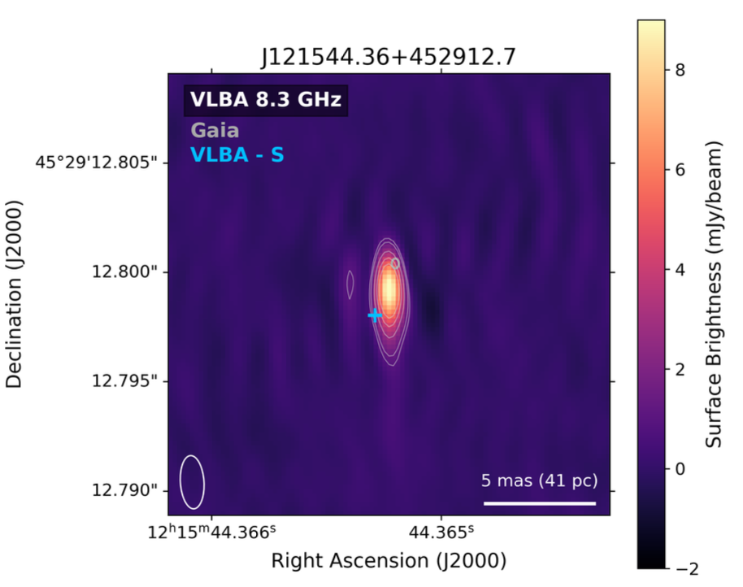

Varstrometry for Dual AGN using Radio Interferometry (VaDAR)
Do astrometrically variable quasars represent a new population of multi-AGN? The VaDAR project leverages the positional accuracy of the Gaia space telescope with the high spatial resolution of radio interferometers to detect astrometrically variable quasars as a method of searching for dual AGN candidates.

Publications
Schwartzman, E., Fudolig, P., et al. Varstrometry for Dual AGN using Radio Interferometry: VaDAR with the VLBA, 2025, ApJ, 987, 200
Radio Emission in Radio-Quiet Quasars
What physical processes generate the weak radio emission observed in radio-quiet quasars? This project explores how different physical mechanisms manifest in radio-quiet quasars, with a particular focus on how milliarcsecond-scale radio structures and photometric radio variability can shed light on the non-thermal emission within these sources.
Publications
Come back soon!